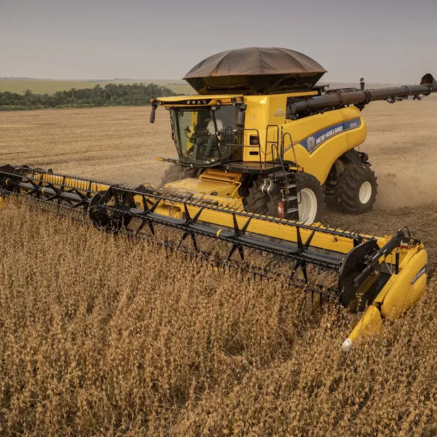
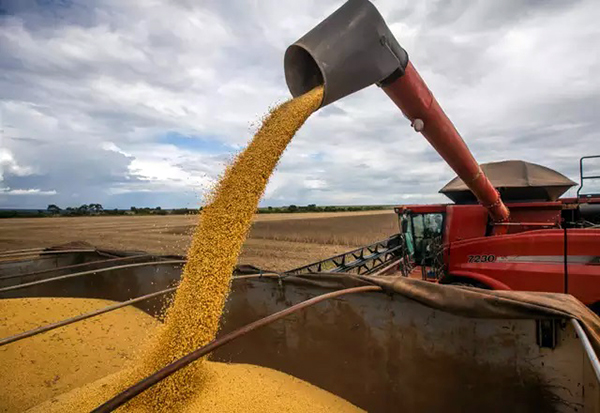

Máquinas

Tratores
Os tratores, ou máquinas agrícolas, são veículos que desempenham um papel crucial na mecanização da agricultura. Eles são utilizados para uma variedade de tarefas, desde o preparo do solo até a colheita, tornando o trabalho dos agricultores mais eficiente e produtivo. Os tratores, ou máquinas agrícolas, são veículos que desempenham um papel crucial na mecanização da agricultura. Eles são utilizados para uma variedade de tarefas, desde o preparo do solo até a colheita, tornando o trabalho dos agricultores mais eficiente e produtivo.

Colheitadeira
Este projeto é um jogo interativo baseado em navegador que explora o impacto e as implicações da Inteligência Artificial (IA) na sociedade, permitindo que as pessoas jogadoras façam escolhas que influenciam o desenrolar de uma narrativa sobre o futuro da IA.

Carreta
EEste projeto Scratch cria uma experiência interativa educativa sobre astronomia, permitindo aos usuários explorar informações sobre constelações, eclipses, e a forma da Terra através de cenários dinâmicos e diálogos informativos.